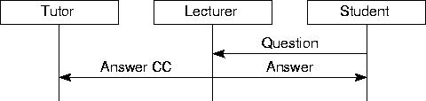
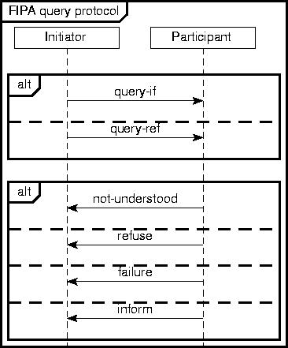

AUML-2 & Interaction Diagram Tool
This web page describes a textual notation for describing interaction diagrams
and interaction protocols in a (subset of) AUML-2. There is also an associated
(prototype!) tool that takes these
textual descriptions and generates a graphical diagram (in encapsulated
postscript).
Further information:
- Some slides describing the tool (ppt,
pdf,
pdf-6up)
- The textual notation and tool support is covered in the following papers.
The ISEAT paper was the first published description, the demonstration just mentions the support in PDT briefly, whereas the more recent journal paper is the most comprehensive (and definitive) version.
NEW: Similar functionality has now been built into the
Prometheus Design Tool (PDT), making the prototype tool obsolete.
Usage
Prepare a text file with a description. In the steps below we assume that
this is in a file called test.
-
Download auml.pl
-
./auml.pl test
-
wish test.tk
-
ghostview test.eps
Notes:
-
Wish requires an X display to be available, so run it on an xterm or under
vncviewer, not using telnet/ssh
-
auml.pl is written in perl and generates a Tcl/Tk script. Both Perl and
Tcl/Tk are installed on yallara.
Download: auml-new.pl. (or older version or even older
version)
Input Format
An input file consists of a series of commands, one command per line. Usually,
the first few commands define agents/roles and then the rest of the file
defines messages between them. The order that agents appear from left to
right is the order in which they are defined.
Available commands are the following: (guard, sub,
goto and label are new)
-
start protocol name - occurs at the start and gives
the protocol name. This indicated that an AUML-2 protocol is being defined
rather than an interaction diagram.
-
finish - occurs at the end of the file and indicates the
end of the protocol. Only used if you have start.
-
agent shortname longname - defines an agent. The
shortname is used to refer to the agent in messages whereas the longname
is what is displayed in the diagram. For example, agent c Customer.
-
role shortname longname - same as agent shortname
longname.
-
invis shortname longname - used
to create an agent with no lifeline. Useful for having a source for initial
messages (see the examples
below). Note that the
longname isn't used but something must still be there.
-
message from to message description - a message;
note that short names are used to refer to agents. For example, message
c s Response.
-
backup - used to shift the current point backwards. Normally
having two messages has the first message occuring before the second. By
putting a backup before the second message the two messages will
be simultaneous (see the examples below).
-
skip - opposite of backup. Creates space.
-
box type - creates an AUML box. For example, box
alt.
-
next - creates a dashed line within an AUML box indicating
the next region.
-
end type - closes an AUML box. Note that the type
is optional, if it is given it must match with the opening box.
-
guard guard text - places a guard
-
sub sub protocol name - invokes a sub-protocol
-
goto name of label - a "goto" continuation
-
label name of label - a "label" (or target) continuation
-
action agent action text - this is one way of presenting
actions. It is not conformant with the AUML-2 standard. It's basically
a variant of a guard: the action text is placed centered over the
lifeline of the named (using the short name) agent.
Converting Postscript to Other Formats
Firstly, why postscript? Because it produces high quality printouts and
can be scaled to any resolution.
Converting to bitmap formats (e.g. for the web, for powerpoint presentations)
can be done using ghostview. Under windows, ghostview offers a convert
option. Under unix, you can call gs with various command line arguments
to convert postscript to a range of formats.
For example, the following command converts eg1.eps to eg1.jpg:
gs -sDEVICE=ppm -sOutputFile=- -r100x100 -sNOPAUSE -q eg1.eps
-c showpage -c quit | pnmcrop| cjpeg > eg1.jpg
Examples
Firstly, a simple interaction diagram (download: txt,
eps).
Note the use of backup to have two simultaneous messages.
agent T Tutor
agent L Lecturer
agent S Student
message S L Question
message L S Answer
backup
message L T Answer CC
Secondly, a simple interaction protocol (download: txt,
eps).
Note that indentation makes no difference to the tool, but makes the protocol's
textual description more readable to humans.
start
FIPA query protocol
agent I Initiator
agent P Participant
box alt
message I P query-if
next
message I P query-ref
end alt
box alt
message P I not-understood
next
message P I refuse
next
message P I failure
next
message P I inform
end alt
finish
Thirdly, an example illustrating the use of invis (download:
txt,eps).
 invis env environment
invis env environment
role p Proxy
role ws Web Server
message env p Page Request
message p ws Page Request
message ws p Page
message p env Page
Finally, a silly example illustrating some of the new features. (download:
txt,eps).
 agent a An agent
agent a An agent
agent b Another agent
message a b Hello
message b a G'day
box alt
guard [sunny]
message a b Lovely weather!
goto Farewell
next
guard else
message a b Ah the rain!
sub Complain about the weather
end alt
label Farewell
message b a Indeed
finish
Bugs
Yes :-)
Seriously, this is a prototype.
Use at your own risk. If you find bugs please let me know. if you want
to fix bugs yourself or enhance the tool feel free to do so. If you add
cool new functionality please send me a copy!